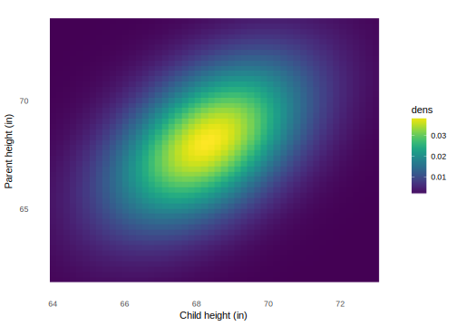

Chapter 2 Regression
library("tidyverse")
library("modelr")
library("stringr")
library("HistData")2.1 Joint vs. Conditional models
In most problems, the researcher is concerned with relationships between multiple variables. For example, suppose that we want to model the relationship between two variables, \(Y\) and \(X\). There are two main approaches to modeling this relationship.
- joint model: Jointly model \(Y\) and \(X\) as \(f(Y, X)\). For example, we can model \(Y\) and \(X\) as coming from a bivariate normal distribution.1
- conditional model: Model \(Y\) as a conditional function of \(X\). This means we calculate a function of \(Y\) for each value of \(X\).2 Most often we focus on modeling a conditional statistic of \(Y\), and linear regression will focus on modeling the conditional mean of \(Y\), \(\E(Y | X)\).
- regression (conditional) model
- \(p(y | x_1, \dots, x_k) = f(x_1, \dots, x_k)\) and \(x_1, \dots, x_k\) are given.
- joint model
- \(p(y, x_1, \dots, x_k) = f(y, x_1, \dots, x_k)\)
If we knew the joint model we could calculate the conditional model, \[ (y | x_1, \dots, x_k) = \frac{p(y, x_1, \dots, x_k)}{p(x_1, \dots, x_k)} . \] However, especially when there are specific outcome variables of interest, the conditional model, i.e. regression, is easier because the analyst can focus on modeling how \(Y\) varies with respect to \(X\), without necessarily having to model the process by which \(X\) is generated. However, that very convenience of not modeling the process which generates \(X\) will be the problem when regression is used for causal inference on observational data.
At its most general, “regression analysis, broadly construed, traces the distribution of a response variable (denoted by \(Y\))—or some characteristic of this distribution (such as its mean)—as a function of one of more explanatory variables (Fox 2016, 15).” is a procedure that is used to summarize conditional relationships. That is, the average value of an outcome variable conditional on different values of one or more explanatory variables.
While this section will generally cover linear regression, it is not the only form of regression. So let’s start with a definition of regression.
Most generally, a regression represents a function of a variable, \(Y\) as a function of another variable or variables, \(X\), and and error. \[ g(Y_i) = f(X_i) + \text{error}_i \]
The conditional expectation function (CEF) or regression function of \(Y\) given \(X\) is denoted, \[ \mu(x) = \E\left[Y | X = x\right] \]
But if regression represents \(Y\) as a function of \(X\), what’s the alternative? Instead of modeling \(Y\) as a function of \(X\), we could jointly model both \(Y\) and \(X\). A regression model of \(Y\) and \(X\) would be multivariate function, \(f(Y, X)\). In machine learning these approaches are sometimes called descriminative (regression) and generative (joint models) models.
2.2 Conditional expectation function
2.2.1 Discrete Covariates
Before turning to considering continuous variable, it is useful to consider the conditional expectation function for a discrete \(Y\) and \(X\).
Consider the datasets dataset included in the recommended R package datasets. It is a cross-tabulation of the survival of the 2,201 passengers in the sinking of the Titanic in 1912, as well as characteristics of those passengers: passenger class, gender, and age.
Titanic <- as_tibble(datasets::Titanic) %>%
mutate(Survived = (Survived == "Yes"))The proportion of passengers who survived was
summarise(Titanic, prop_survived = sum(n * Survived) / sum(n))## # A tibble: 1 × 1
## prop_survived
## <dbl>
## 1 0.323035Since Survived is a
A conditional expectation function is a function that calculates the mean of Y for different values of X. For example, the conditional expectation function for
Calculate the CEF for Survived conditional on Age,
Titanic %>% group_by(Age) %>% summarise(prop_survived = sum(n * Survived) / sum(n))## # A tibble: 2 × 2
## Age prop_survived
## <chr> <dbl>
## 1 Adult 0.3126195
## 2 Child 0.5229358conditional on Sex,
Titanic %>% group_by(Sex) %>% summarise(prop_survived = sum(n * Survived) / sum(n))## # A tibble: 2 × 2
## Sex prop_survived
## <chr> <dbl>
## 1 Female 0.7319149
## 2 Male 0.2120162conditional on Class,
Titanic %>%
group_by(Class) %>%
summarise(prop_survived = sum(n * Survived) / sum(n))## # A tibble: 4 × 2
## Class prop_survived
## <chr> <dbl>
## 1 1st 0.6246154
## 2 2nd 0.4140351
## 3 3rd 0.2521246
## 4 Crew 0.2395480finally, conditional on all combinations of the other variables (Age, Sex, Class),
titanic_cef_3 <-
Titanic %>%
group_by(Class, Age, Sex) %>%
summarise(prop_survived = sum(n * Survived) / sum(n))
titanic_cef_3## Source: local data frame [16 x 4]
## Groups: Class, Age [?]
##
## Class Age Sex prop_survived
## <chr> <chr> <chr> <dbl>
## 1 1st Adult Female 0.97222222
## 2 1st Adult Male 0.32571429
## 3 1st Child Female 1.00000000
## 4 1st Child Male 1.00000000
## 5 2nd Adult Female 0.86021505
## 6 2nd Adult Male 0.08333333
## 7 2nd Child Female 1.00000000
## 8 2nd Child Male 1.00000000
## 9 3rd Adult Female 0.46060606
## 10 3rd Adult Male 0.16233766
## 11 3rd Child Female 0.45161290
## 12 3rd Child Male 0.27083333
## 13 Crew Adult Female 0.86956522
## 14 Crew Adult Male 0.22273782
## 15 Crew Child Female NaN
## 16 Crew Child Male NaNThe CEF can be used to predict outcome variables given \(X\) variables. What is the predicted probability of survival for each of these characters from the movie Titanic?
- Rose (Kate Winslet): 1st class, adult female (survived)
- Jack (Leonardo DiCaprio): 3rd class, adult male (did not survive)
- Cal (Billy Zane) : 1st class, adult male (survived)
titanic_chars <-
tribble(
~ name, ~ Class, ~ Age, ~ Sex, ~ Survived,
"Rose", "1st", "Adult", "Female", TRUE,
"Jack", "3rd", "Adult", "Male", FALSE,
"Cal", "1st", "Adult", "Male", TRUE
)
left_join(titanic_chars, titanic_cef_3,
by = c("Class", "Age", "Sex"))## # A tibble: 3 × 6
## name Class Age Sex Survived prop_survived
## <chr> <chr> <chr> <chr> <lgl> <dbl>
## 1 Rose 1st Adult Female TRUE 0.9722222
## 2 Jack 3rd Adult Male FALSE 0.1623377
## 3 Cal 1st Adult Male TRUE 0.3257143Rose was predicted to survive 97% of 1st class adult females survived, and she did. Jack was not predicted to survive (only 16% of 3rd class adult males survived, and he did not.3 Cal was not predicted to survive (33% of 1st class adult males survived), but he did, though through less than honorable means in the movie.
- Note that we haven’t made any assumptions about distributions of the variables.
- In this case, the outcome variable in the CEF was a binary variable, and we calculated a proportion. However, the proportion is the expected value (mean) of a binary variable, so the calculation of the CEF wouldn’t change.
- If we continued to condition on more discrete variables, the number of observed cell sizes would get smaller and smaller (and possibly zero), with larger standard errors.
2.2.2 Continuous Covariates
But what happens if the conditioning variables are continuous?
Galton (1886) examined the joint distribution of the heights of parents and their children. He was estimating the average height of children conditional upon the height of their parents. He found that this relationship was approximately linear with a slope of 2/3.
This means that on average taller parents had taller children, but the children of taller parents were on average shorter than they were, and the children of shorter parents were on average taller than they were. In other words, the children’s height was more average than parent’s height.
This phenomenon was called regression to the mean, and the term regression is now used to describe conditional relationships (Hansen 2010).
His key insight was that if the marginal distributions of two variables are the same, then the linear slope will be less than one.
He also found that when the variables are standardized, the slope of the regression of \(y\) on \(x\) and \(x\) on \(y\) are the same. They are both the correlation between \(x\) and \(y\), and they both show regression to the mean.
Galton <- as_tibble(Galton)
Galton## # A tibble: 928 × 2
## parent child
## <dbl> <dbl>
## 1 70.5 61.7
## 2 68.5 61.7
## 3 65.5 61.7
## 4 64.5 61.7
## 5 64.0 61.7
## 6 67.5 62.2
## 7 67.5 62.2
## 8 67.5 62.2
## 9 66.5 62.2
## 10 66.5 62.2
## # ... with 918 more rowsCalculate the regression of children’s heights on parents. Interpret the regression.
child_reg <- lm(child ~ parent, data=Galton)
child_reg##
## Call:
## lm(formula = child ~ parent, data = Galton)
##
## Coefficients:
## (Intercept) parent
## 23.9415 0.6463Calculate the regression of parent’s heights on children’s heights. Interpret the regression.
parent_reg <- lm(parent ~ child, data=Galton)
parent_reg##
## Call:
## lm(formula = parent ~ child, data = Galton)
##
## Coefficients:
## (Intercept) child
## 46.1353 0.3256Regression calculates the conditional expectation function, \(f(Y, X) = \E(Y | X) + \epsilon\), but we could instead jointly model \(Y\) and \(X\).
This is a topic for multivariate statistics (principal components, factor analysis, clustering). In this case, an alternative would be to model the heights of fathers and sons as a bivariate normal distribution.
ggplot(Galton, aes(y = child, x = parent)) +
geom_jitter() +
geom_density2d()
# covariance matrix
Galton_mean <- c(mean(Galton$parent), mean(Galton$child))
# variance covariance matrix
Galton_cov <- cov(Galton)
Galton_cov## parent child
## parent 3.194561 2.064614
## child 2.064614 6.340029var(Galton$parent)## [1] 3.194561var(Galton$child)## [1] 6.340029cov(Galton$parent, Galton$child)## [1] 2.064614Calculate density for a multivariate normal distribution
library("mvtnorm")
Galton_mvnorm <- function(parent, child) {
# mu and Sigma will use the values calculated earlier
dmvnorm(cbind(parent, child), mean = Galton_mean,
sigma = Galton_cov)
}Galton_mvnorm(Galton$parent[1], Galton$child[1])## [1] 4.272599e-05Galton_dist <- Galton %>%
modelr::data_grid(parent = seq_range(parent, 50), child = seq_range(child, 50)) %>%
mutate(dens = map2_dbl(parent, child, Galton_mvnorm))Why don’t I calculate the mean and density using the data grid?
library("viridis")
ggplot(Galton_dist, aes(x = parent, y = child)) +
geom_raster(mapping = aes(fill = dens)) +
#geom_contour(mapping = aes(z = dens), colour = "white", alpha = 0.3) +
#geom_jitter(data = Galton, colour = "white", alpha = 0.2) +
scale_fill_viridis() +
theme_minimal() +
theme(panel.grid = element_blank()) +
labs(y = "Parent height (in)", x = "Child height (in)")
Using the plotly library we can make an interactive 3D plot:
x <- unique(Galton_dist$parent)
y <- unique(Galton_dist$child)
z <- Galton_dist %>%
arrange(child, parent) %>%
spread(parent, dens) %>%
select(-child) %>%
as.matrix()
plotly::plot_ly(z = z, type = "surface")But with regression we are calculating only one margin.
Galton_means <- Galton %>%
group_by(parent) %>%
summarise(child = mean(child))
ggplot(Galton, aes(x = factor(parent), y = child)) +
geom_jitter(width = 0) +
geom_point(data = Galton_means, colour = "red")
Note that in this example, it doesn’t really matter since a bivariate normal distribution happens to describe the data very well. This is not true in general, and we are simplifying our analysis by calculating the CEF rather than jointly modeling both.
References
Fox, John. 2016. Applied Regression Analysis & Generalized Linear Models. 3rd ed. Sage.
Galton, Francis. 1886. “Regression Towards Mediocrity in Hereditary Stature.” The Journal of the Anthropological Institute of Great Britain and Ireland 15. JSTOR: 246. doi:10.2307/2841583.
In machine learning, these are called generative models.↩
In machine learning, these are called discriminative models.↩
However, this CEF does not condition on holding onto a piece of flotsam with enough room for two.↩